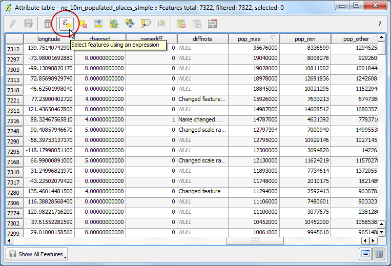

Working with Attributes
GIS data has two parts - features and attributes. Attributes are structured
data about each feature. This tutorial shows how to view the attributes and do
basic queries on them in QGIS.
Overview of the task
The dataset for this tutorial contains information about populated places of
the world. The task is to query and find all the capital cities in the world
that have a population greater than 1,000,000.
Otras habilidades que aprenderás
- Select features from a layer using expressions.
- Deselect features from a layer using the Attributes toolbar.
- Using Query Builder to show a subset of features from a layer.
Procedure
- Once you have downloaded the data, open QGIS. Go to .

- Click on Browse and navigate to the folder where you downloaded
the data.

- Locate the downloaded zip file ne_10m_populated_places_simple.zip. You do
not need to unzip the file. QGIS has the ability to read zip files directly.
Select the file and click Open.

- The selected layer will now be loaded in QGIS and you will see many points
representing the populated places of the world.

- Right-click the layer and select Open Attribute Table.

- Explore the various attributes and their values.

- We are interested in the population of each feature, so pop_max is the
field we are looking for. You can click twice on the field header to sort
the column in descending order.

- Now we are ready to perform our query on these attributes. QGIS uses
SQL-like expressions to perform queries. Click Select features
using an expression.

- In the Select By Expression window, expand the Fields
and Values section and double-click the
pop_max label. You will notice
that it is added to the expression section at the bottom. If you aren’t
sure about the field values, you can click the Load all unique
values to see what the attribute values are present in the dataset. For
this exercise, we are looking to find all features that have a population
greater than 1,000,000. So complete the expression as below and click
Select.

- Click on Close and return to the main QGIS window. You will
notice that a subset of points is now rendered in yellow. This is the
result of our query and you are seeing all places from the dataset that
have the
pop_max attribute value greater than 1,000,000.

- The goal for this exercise is to find the places that are country capitals.
The field containing this data is adm0cap. The value
1 indicates that
the place is a capital. We can add this criteria to our previous expression
using the and operator. Let’s refine our query to select only those
places which are capitals. Click on the Select feature using an
expression button in the attribute table and enter the expression as below
and click Select and then Close.
"pop_max" > 1000000 and "adm0cap" = 1

- Return to the main QGIS window. Now you will see a smaller subset of the
points selected. This is the result of the second query and shows all
places from the dataset that are country capitals as well as have
population greater than 1,000,000. If we wanted to do some further analysis
on this subset of data, we can make this selection persistent. Right-click
the
ne_10m_populated_places_simple layer and select
Properties.

- In the General tab, scroll down to the Feature
subset section. Click Query Builder.

- Enter the same expression you had entered earlier and click OK.
"pop_max" > 1000000 and "adm0cap" = 1

- Back in the main QGIS window, you will see rest of the points disappear.
You may now perform any other analysis on this layer and only the features
that match our expression will be used. You will notice that the points
still appear in yellow. This is because they are still selected. Find the
Deselect Features from All Layers button under the
Attributes toolbar and click on it.

- You will see that the points are now de-selected and rendered in their
original color.